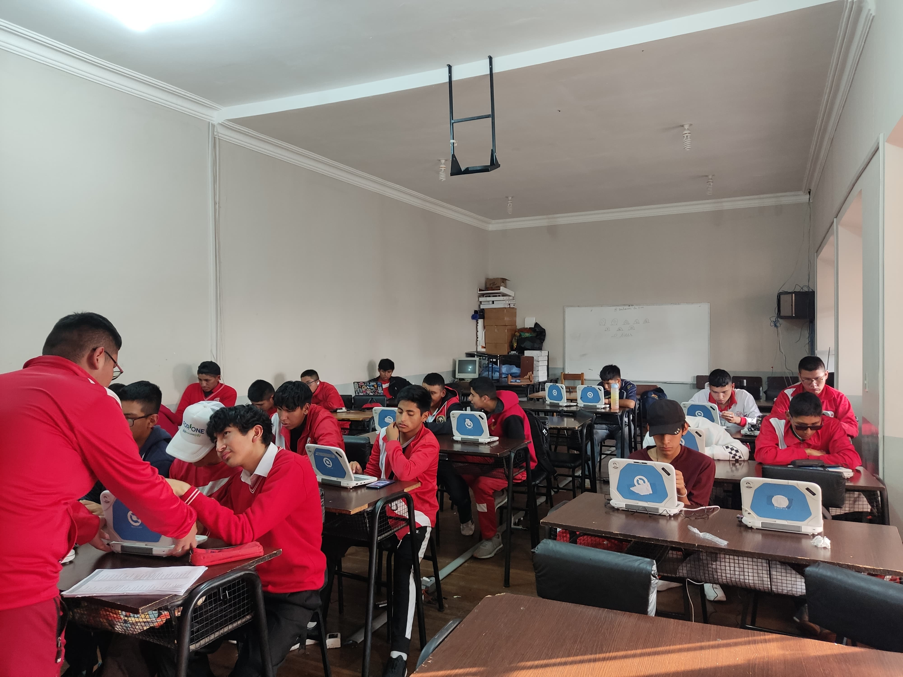
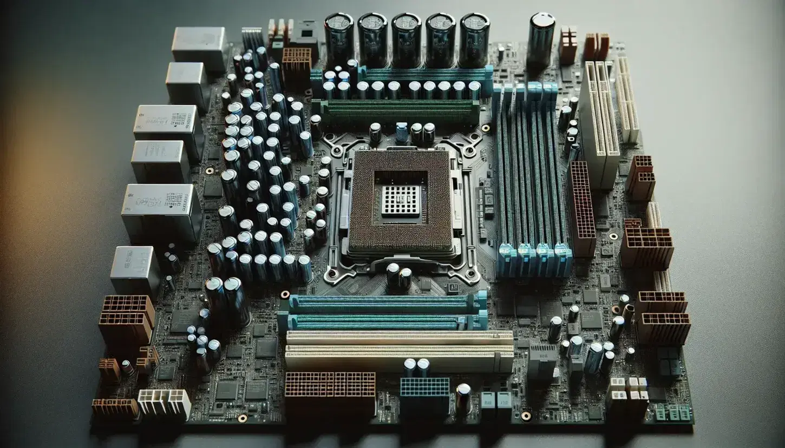
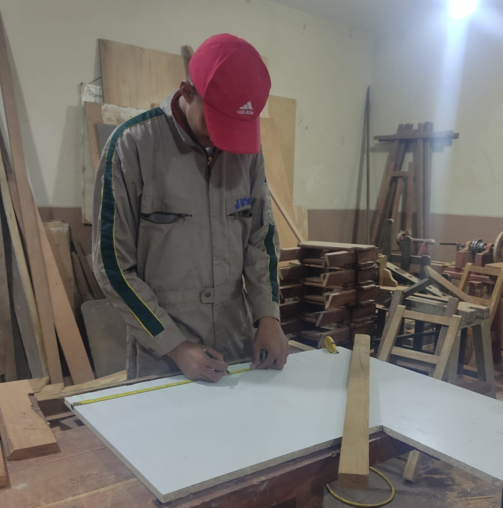
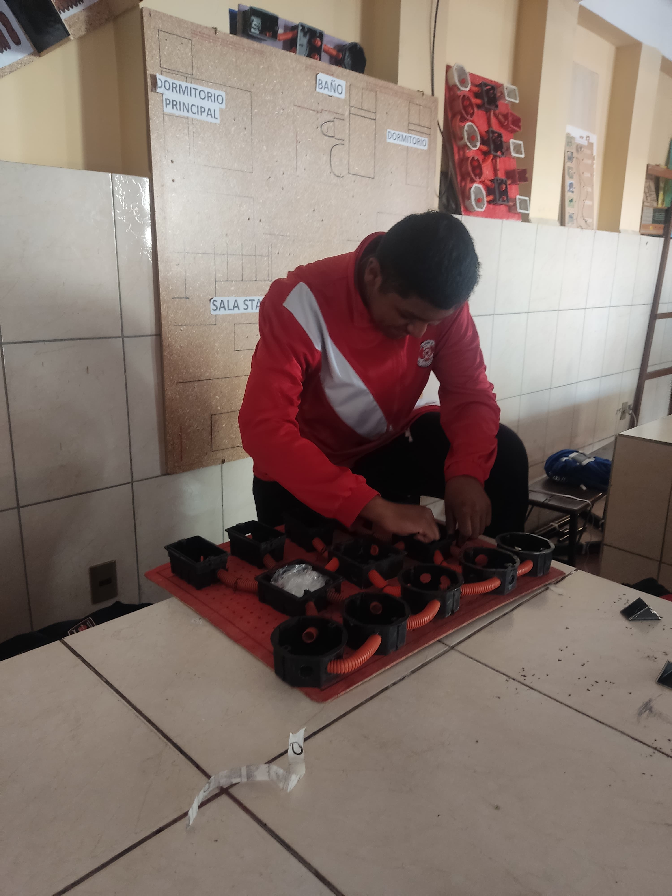
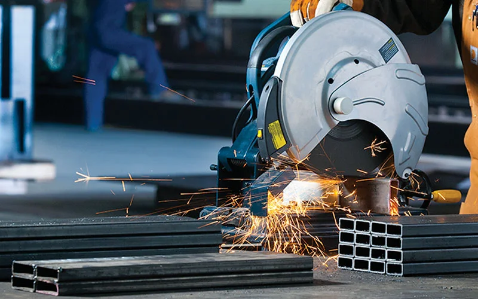
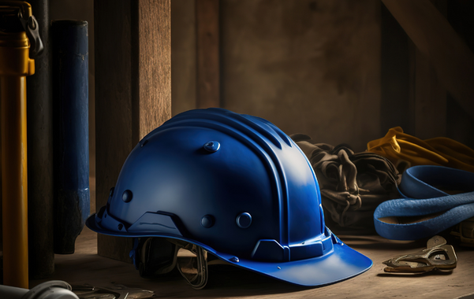

¿Que es?La carrera de Técnico Medio en Sistemas Informáticos forma profesionales capacitados para instalar, configurar, administrar, y mantener sistemas informáticos en diversos entornos. Este programa de estudios tiene como objetivo brindar a los estudiantes una formación integral en tecnologías de la información, abarcando desde el manejo de hardware hasta el desarrollo de software, la administración de redes, y la seguridad informática. |
 |
Fundamentos de programaciónLos fundamentos de programación constituyen la base esencial para desarrollar competencias en el área de sistemas informáticos, permitiendo a los estudiantes comprender y aplicar los principios que rigen la creación de software. Este conjunto de conocimientos se enfoca en el aprendizaje de lenguajes de programación, el diseño de algoritmos, y el uso adecuado de estructuras de datos, todos elementos que conforman la base para la solución de problemas computacionales. |
|
Arquitectura de computadorasLa arquitectura de computadoras es una disciplina fundamental en el campo de los sistemas informáticos, dedicada al estudio, diseño y análisis de los componentes internos de una computadora y su interconexión para lograr un funcionamiento óptimo. Este conocimiento proporciona una comprensión detallada de cómo los diferentes elementos de hardware, tales como el procesador, la memoria, el almacenamiento, y los dispositivos de entrada y salida, interactúan y colaboran en el procesamiento de datos y la ejecución de instrucciones. |
 |

|
Sistemas operativosLos sistemas operativos son componentes esenciales en los sistemas informáticos, encargados de gestionar y coordinar todos los recursos de hardware y software de una computadora para permitir la ejecución eficiente de aplicaciones y servicios. Actúan como una capa intermedia entre el hardware y el usuario, proporcionando un entorno estable y seguro en el que se desarrollan y ejecutan las operaciones informáticas. |
OfimaticaLa ofimática se refiere al conjunto de aplicaciones informáticas diseñadas para facilitar la creación, gestión y procesamiento de documentos en entornos de oficina. Este término proviene de la combinación de "oficina" y "informática", y abarca una variedad de herramientas que permiten optimizar tareas administrativas y de comunicación en el ámbito laboral. En el contexto de los sistemas informáticos, la ofimática es una disciplina crucial, ya que mejora la eficiencia y productividad en el trabajo diario. |
|  |
¿Que es?La carrera de Técnico Medio en Carpintería está diseñada para formar profesionales capacitados en el diseño, fabricación y reparación de estructuras y muebles de madera. Este programa educativo combina la teoría y la práctica, proporcionando a los estudiantes los conocimientos y habilidades necesarios para desempeñarse en el sector de la carpintería y la ebanistería. |
Herramientas Manuales y EléctricasLas herramientas manuales y eléctricas son elementos fundamentales en la carpintería, ya que facilitan y optimizan el trabajo de los carpinteros en la creación, modificación y reparación de estructuras y muebles de madera. Cada tipo de herramienta tiene un propósito específico y su adecuado uso es esencial para lograr resultados de alta calidad en los proyectos de carpintería. |

|

|
Diseño y Fabricacion de MueblesLos estudiantes de carpintería aprenden a concebir, diseñar y construir muebles funcionales y estéticos, considerando tanto las necesidades del usuario como las características de los materiales. Desde la elección de la madera adecuada hasta la aplicación de acabados, los estudiantes adquieren las habilidades necesarias para transformar un diseño en un objeto tangible y duradero. Esta área de estudio combina conocimientos teóricos y prácticos. |
Acabados y BarnizadoLos estudiantes aprenden una amplia gama de técnicas de acabado que van desde los métodos tradicionales hasta los más modernos. Estas técnicas incluyen el lijado, el cepillado, el teñido, el entintado, el barnizado y el encerado. Cada una de ellas tiene como objetivo resaltar la veta de la madera, suavizar la superficie y protegerla de agentes externos. El barnizado es una de las técnicas más comunes y versátiles. Consiste en aplicar varias capas de barniz sobre la madera para crear una película protectora y brillante. Existen diferentes tipos de barniz, cada uno con características y aplicaciones específicas. |
|

|
Tallado en Maderael tallado en madera se estudia como una disciplina que combina el arte y la técnica. Los estudiantes aprenden a seleccionar las maderas adecuadas para cada proyecto, a utilizar las herramientas de forma segura y eficiente, y a desarrollar un sentido estético que les permita crear diseños originales y funcionales. El tallado en madera no solo es una habilidad manual, sino también una forma de expresión artística. Los estudiantes al tallar, pueden plasmar sus ideas y emociones en la madera, creando piezas únicas que reflejan su estilo personal. Además de su valor estético, el tallado en madera tiene aplicaciones prácticas en la creación de muebles, elementos decorativos y objetos de uso cotidiano. |
¿Que es?La carrera de Tecnico Medio en Electromecanica fusiona los principios de la electricidad y la mecánica. Esta rama del conocimiento forma profesionales capacitados para diseñar, construir, operar y mantener sistemas que involucran tanto componentes eléctricos como mecánicos. Los electromecánicos desempeñan un papel fundamental en la sociedad moderna, ya que su labor es esencial en diversos sectores industriales. Desde la generación y distribución de energía eléctrica hasta la automatización de procesos en fábricas, pasando por el diseño de vehículos eléctricos y sistemas de control industrial, estos profesionales encuentran un amplio campo de acción. |
 |

|
Fundamentos de ElectricidadSon los conocimientos básicos y esenciales que permiten comprender el comportamiento de los circuitos eléctricos, la generación, transmisión y utilización de la energía eléctrica, así como los principios que rigen el funcionamiento de los dispositivos y sistemas electromecánicos. En la carrera de Electromecánica, el estudio de los fundamentos de electricidad abarca un amplio espectro de temas, desde los conceptos más básicos, como la corriente eléctrica, el voltaje y la resistencia, hasta temas más avanzados como los circuitos trifásicos, los sistemas de control y la electrónica de potencia. |
Instalaciones ElectricasConstituyen una parte fundamental de la formación de un electromecánico. Esta área del conocimiento se enfoca en el diseño, construcción, operación y mantenimiento de sistemas eléctricos que suministran energía a diversos tipos de edificaciones, industrias y servicios. En la carrera de Electromecánica, el estudio de las instalaciones eléctricas abarca desde los conceptos básicos de circuitos eléctricos hasta el diseño de sistemas complejos de alta tensión. Los estudiantes aprenden a calcular cargas eléctricas, seleccionar los materiales adecuados, dimensionar conductores y proteger las instalaciones. |

|

|
Electronica BasicaConstituye un pilar fundamental en la formación de un electromecánico. Esta área del conocimiento proporciona las herramientas teóricas y prácticas necesarias para comprender el comportamiento de los dispositivos electrónicos, desde los más simples hasta los más complejos. En la carrera de Electromecánica, el estudio de la electrónica básica abarca un amplio espectro de temas, desde los componentes electrónicos elementales (resistencias, capacitores, inductores, diodos, transistores) hasta los circuitos electrónicos básicos (amplificadores, osciladores, rectificadores). |
Mantenimiento IndustrialEs una disciplina fundamental dentro de la ingeniería electromecánica que se enfoca en preservar la funcionalidad, eficiencia y seguridad de los equipos y sistemas electromecánicos a lo largo de su ciclo de vida. Los electromecánicos desempeñan un papel crucial en esta área, aplicando sus conocimientos para planificar, ejecutar y evaluar las tareas de mantenimiento. En la carrera de Electromecánica, el estudio del mantenimiento industrial abarca un amplio espectro de temáticas, desde los conceptos básicos de fiabilidad y mantenibilidad hasta las técnicas avanzadas de diagnóstico y gestión de activos. |

|

|
¿Que es?La Carrera de Tecnico Medio en Metalmecanica se enfoca en el diseño, fabricación y mantenimiento de productos y sistemas mecánicos, principalmente aquellos que involucran el uso de metales. Son los profesionales encargados de transformar materias primas metálicas en productos útiles y funcionales, aplicando conocimientos de ciencia de materiales, mecánica, diseño asistido por computadora (CAD) y manufactura. Esta carrera abarca una amplia gama de actividades, desde el diseño conceptual de productos hasta la producción en masa. |
Procesos de ManufacturaEsta área del conocimiento se enfoca en la transformación de materias primas, principalmente metales, en productos finales con una forma y función específicas. Los tecnicos medios de metalmecánica, son los responsables de diseñar, seleccionar y optimizar estos procesos para garantizar la calidad, eficiencia y productividad de la producción. En la carrera de Metalmecánica, el estudio de los procesos de manufactura abarca un amplio espectro de técnicas y tecnologías, desde los métodos tradicionales de mecanizado hasta los procesos de fabricación aditiva más modernos. |
 |

|
Soldadura y CorteSon procesos fundamentales dentro de la carrera de metalmecánica que permiten unir o separar piezas metálicas, respectivamente. Estas técnicas son esenciales para la fabricación de una amplia gama de productos, desde estructuras simples hasta equipos complejos. En la carrera de Metalmecánica, el estudio de la soldadura y el corte proporciona a los estudiantes los conocimientos y habilidades necesarias para seleccionar y aplicar los procesos adecuados a cada aplicación. Se aprenden los diferentes tipos de soldadura (arco eléctrico, TIG, MIG, oxi-combustible, etc.) |
Seguridad IndustrialEs una disciplina fundamental dentro de la carrera de Tecnico Medio en Metalmecánica que se enfoca en la prevención de accidentes y enfermedades laborales. Los tecnicos desempeñan un papel crucial en la implementación de medidas de seguridad en entornos industriales, garantizando así la salud y el bienestar de los trabajadores, la protección del equipo y la continuidad de las operaciones. En la carrera de Metalmecánica, el estudio de la seguridad industrial abarca un amplio espectro de temas, desde la identificación y evaluación de riesgos hasta el diseño de sistemas de protección y la elaboración de procedimientos de seguridad. |
 |

|
Mantenimiento IndustrialEs una disciplina fundamental dentro de la carrera de Tecnico Medio en metalmecánica que se enfoca en preservar la funcionalidad, eficiencia y seguridad de los equipos y sistemas productivos a lo largo de su ciclo de vida. Los tecnicos en metalmecánica desempeñan un papel crucial en esta área, aplicando sus conocimientos para planificar, ejecutar y evaluar las tareas de mantenimiento. En la carrera de Metalmecánica, el estudio del mantenimiento industrial abarca un amplio espectro de temáticas, desde los conceptos básicos de fiabilidad y mantenibilidad hasta las técnicas avanzadas de diagnóstico y gestión de activos. |
Síguenos en nuestras redes sociales: